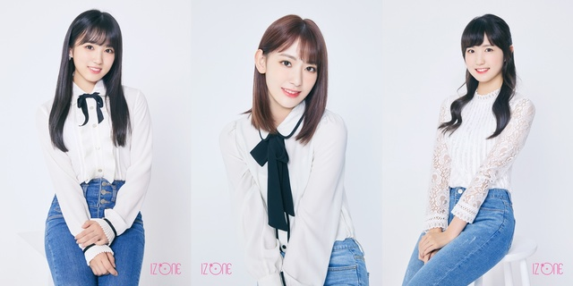
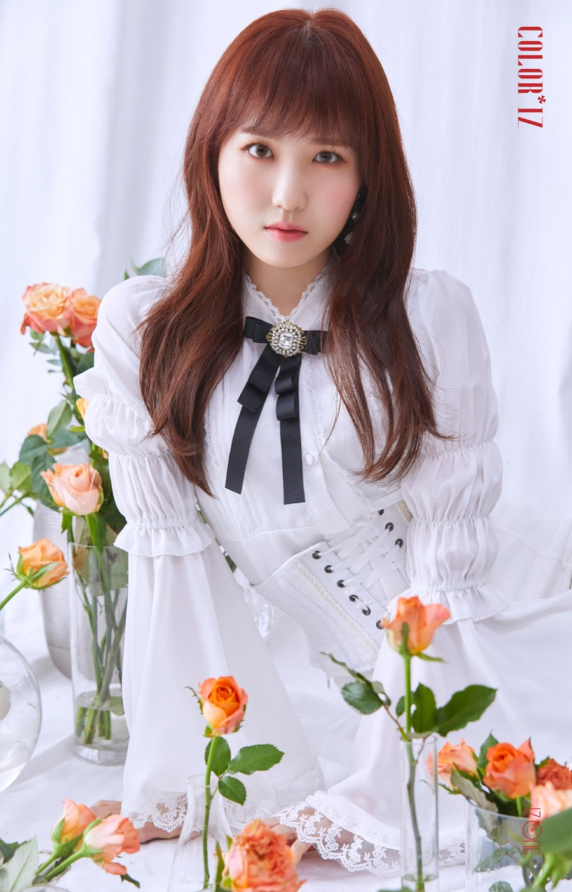
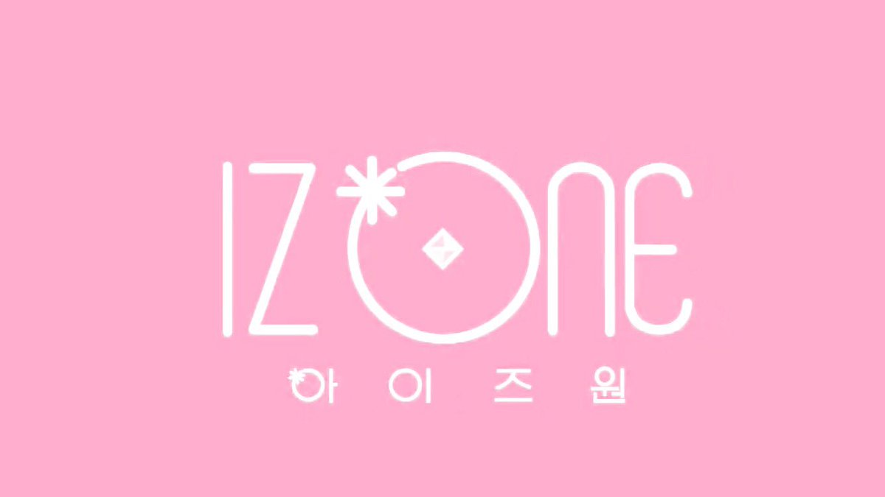

대한민국의 12인조 한일 합작 걸 그룹 입니다.
9명의 한국인 멤버와

3명의 일본인 멤버로 구성되어있다.
2018년 M.net에서 방영된 PRODUCE 48에서 시청자들의 투표로 최종화에서
1위부터 12위까지 데뷔 하였다.
1위 장원영
2위 미야와키 사쿠라
3위 조유리
4위 최예나
5위 안유진
6위 야부키 나코
7위 권은비
8위 강혜원

9위 혼다 히토미
10위 김채원
11위 김민주
12위 이채연

그룹명의 어원은
‘12명의 소녀들이 하나되는 순간’(Twelve(12) Becomes One(1))이라는 이니셜을 갖고 있다.
활동 기간은 2년 6개월이며 2021년 4월까지 일본인 멤버들 (미야와키 사쿠라, 야부키 나코, 혼다 히토미)은AKB48 그룹으로의 활동은 겸임하지 않고 아이즈원 활동에 전임한다.